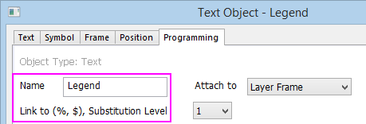
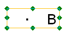
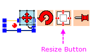
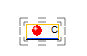
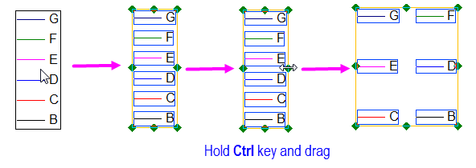
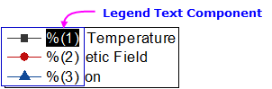
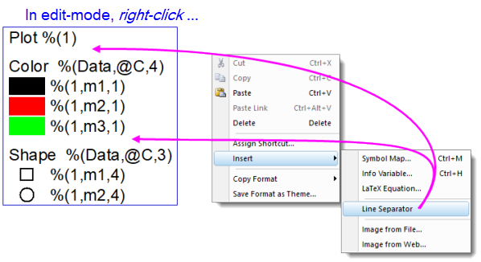
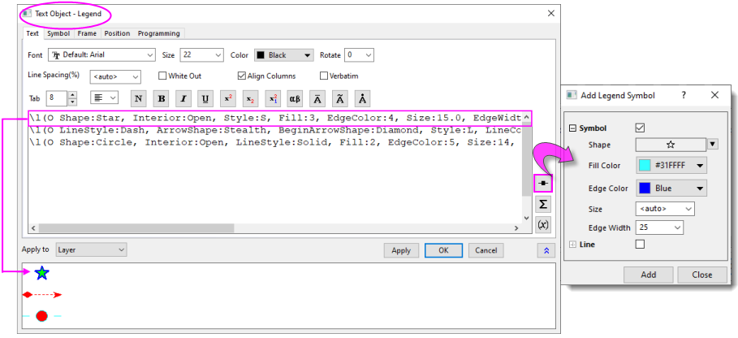

Manuelle Steuerung der Diagrammlegende
Legend-ManualControl
Steuerung der Objekteigenschaften
Eine Diagrammlegende ist ein spezielles Textobjekt, dem zum Ansteuern durch das Programm der Name "Legende" zugewiesen wurde. Um den Namen des Legendenobjekts zu sehen, klicken Sie mit der rechten Maustaste auf die Legende und wählen Sie Eigenschaften. Klicken Sie in dem aufgerufenen Dialog auf die Registerkarte Programmierung.

Hinweis: In der Auswahlliste Verknüpfung zu (%,$), Substitutionsebene ist 1 ausgewählt, wodurch das Legendenobjekt dynamisch mit den Quelldaten verknüpft wird (d. h. sollten sich die Quelldaten irgendwie ändern -- Sie ersetzen vorhandene Zeichnungen mit neuen --, wird die Legende automatisch aktualisiert).
Legendenobjekt umbenennen
Da die Legende ein spezielles Textobjekt mit einem Namen ("Legende") ist, das eine bestimmte Bedeutung in Origin hat, müssen Sie es umbenennen, um die Anpassungen, die in diesem Abschnitt behandelt werden, zu bewahren. Andernfalls wird jede Aktion, die das Legendenobjekt aktualisiert, die Anpassungen überschreiben. Wenn Sie die Legende umbenennen, wird sie zu einem statischen Textobjekt, das nicht mehr durch das Programm gesteuert wird.
Um die Legende umzubenennen:
- Klicken Sie auf das Legendenobjekt, um es auszuwählen.
- Wählen Sie im Menü Format: Objekteigenschaften.
ODER
Klicken Sie mit der rechten Maustaste und wählen Sie Eigenschaften im Kontextmenü.
- Gehen Sie zur Registerkarte Programmierung.
- Ändern Sie den Namen in etwas anderes als "Legende" und klicken Sie dann auf OK.
Größe des Legendenobjekts ändern
Es gibt zwei Möglichkeiten, die Größe des Legendenobjekts manuell zu verändern: Sie können das Objekt mit oder ohne Vergrößerung der Symbole und des Texts vergrößern.
- Zum Verändern der Größe von Zeichnungsymbolen/-text bei Vergrößerung des Legendenobjekts (für Legenden in 2D- oder 3D-Diagrammen):
- Klicken Sie auf das Legendenobjekt. Es werden acht Ankerpunkte angezeigt.
- 
- Ziehen Sie an einem Ankerpunkt, um die Größe des Legendenobjekts zu ändern. Das Seitenverhältnis wird beibehalten, die Symbole und Texte werden ebenfalls in ihrer Größe verändert.
- Zum Verändern der Größe des Legendenobjekts ohne Vergrößerung der Symbole und des Texts (2D- oder 3D-Diagrammlegenden):
- Verschieben Sie den Cursor an die Rahmenlinien des Legendenhintergrunds, und klicken Sie, wenn sie sich in
 verwandeln, um die Elemente zur Größenveränderung (die Markierungen " = ") anzuzeigen.
verwandeln, um die Elemente zur Größenveränderung (die Markierungen " = ") anzuzeigen.

- Ziehen Sie an einem der Elemente, um die Größe des Hintergrunds zu verändern.
Alternativ können Sie die Textobjekteigenschaften object.margin.left/right/bottom/top verwenden, um den Legendenrand zu ändern.
- Zum Verändern der Größe nur des Legendenobjekts (3D-Diagrammlegenden):
- Klicken Sie auf das Legendenobjekt in 3D-Diagrammen. Die Schaltflächengruppen für die Objektsteuerung werden angezeigt:
- 
- Klicken Sie auf die Schaltfläche In der Größe verändern, und die Elemente zur Größenveränderung (die Markierungen " = ") werden angezeigt:
- 
- Ziehen Sie an einem der Elemente, um die Größe des Hintergrunds zu verändern. Dieses Bedienelement verändert die Größe von Symbolen und Texten nicht.
Legendeneinträge in einer Spalte/Zeile anordnen
Um Legendeneinträge schnell in einer Spalte/Zeile anzuordnen, klicken Sie mit der rechten Maustaste auf die Legende und wählen Sie Legende: Vertikal/Horizontal anordnen.
Legendeneinträge in mehreren Spalten anordnen
Um Legendeneinträge für 2D-Diagramme in mehreren Spalten anzuordnen, markieren Sie zuerst das Legendenobjekt und halten Sie dann die Strg-Taste gedrückt, um an einem der grünen Bedienelemente zu ziehen und die Einträge angemessen anzuordnen. Um die Lücke zwischen den angeordneten Einträgen anzupassen, halten Sie die Strg-Taste erneut gedrückt, um an einem der grünen Bedienelemente zu ziehen.
- 
Mit dem Dialog Eigenschaften des Legendenobjekts
Der Dialog Eigenschaften des Legendenobjekts ist nützlich für Änderungen am Inhalt der Diagrammlegende, an Formatierung, Position etc. Klicken Sie mit der rechten Maustaste auf das Legendenobjekt und wählen Sie Eigenschaften:
- Text: Durch Ändern des LabTalk-Codes werden Legendensymbole und -text erzeugt, außerdem viele Optionen der Textformatierung. Sie können zudem manuell Legendensymbole hinzufügen, zeichnungsrelevante Variablen einfügen oder Abbildung Symbole öffnen. Siehe die Bedienelemente der Registerkarte Text.
- Symbol: Ändern der Symbolformatierung. Änderungen werden auf alle Zeichnungssymbole angewendet. Sie werden während der nachfolgenden Legendenaktualisierungen und Rekonstruktionen bewahrt. Siehe die Bedienelemente der Registerkarte Symbol.
- Rahmen: Bedienelemente für Formatierung des Legendenrahmens. Siehe die Bedienelemente der Registerkarte Rahmen.
- Position: Steuern von Größe, Ankerpunkt und Verschiebung des Legendenobjekts. Siehe die Bedienelemente der Registerkarte Position.
- Programmierung: Steuern von Substitutionsebene (wichtig für Steuerung über Programm), Name des Legendenobjekts und von den Skripten, die nach bestimmten Aktionen auf der Diagrammseite oder den Datenzeichnungen ausgeführt werden. Siehe die Bedienelemente der Registerkarte Programmierung.
Legendenobjekt manuell bearbeiten
Standardmäßig werden Origins Diagrammvorlagen so erzeugt, dass Sie die Metadaten der Zeichnung beim Erstellen der Diagrammlegende verwenden. Diese Metadaten werden typischerweise beim Datenimport in das Arbeitsblatt eingelesen und im Bereich der Spaltenbeschriftungszeilen gespeichert. Beispielsweise verwenden viele 2D-Diagramme Text, der in der Kommentarzeile gespeichert ist, oder, falls diese leer ist, Text in den Zeilen Langname bzw. Kurzname; andere verwenden vielleicht Langname und Einheiten. In jedem Fall sind diese Dinge benutzerdefiniert anpassbar und können als Standardeinstellungen mit der Diagrammvorlage gespeichert werden. Im Allgemeinen wird diese Methode der Legendenanpassung empfohlen.
Möglicherweise haben Sie jedoch gute Gründe, die Diagrammlegende manuell bearbeiten zu wollen. Sie können bei jeder Art von Legendenobjekt die Standardeinstellung %( ) Substitutionsnotation überschreiben und manuell durch hinzugefügte Symbole bzw. Text ersetzen. Dies tun Sie folgendermaßen:
- Klicken Sie doppelt oder mit der rechten Maustaste auf das Legendenobjekt und wählen Sie Eigenschaften (Zeichnungssymbole oder Text).
- Drücken Sie die Strg-Taste und klicken Sie doppelt auf das Legendenobjekt, um "direkt" zu bearbeiten (empfohlen nur für Anpassungen des Texts).
- 
Legendensymbole und Text mit Hilfe des Dialogs Eigenschaften einfügen
Sie können Symbole (einschließlich Linien) und Text über den Dialog Eigenschaften manuell einfügen. Auf diese Weise erhalten Sie Zugriff auf alle Symbole in der Galerie Abbildung Symbole, einschließlich benutzerdefinierter Symbole, die Sie womöglich eventuell hinzugefügt haben.
- Klicken Sie mit der rechten Maustaste auf das Legendenobjekt und wählen Sie Eigenschaften.
- Klicken Sie auf die Registerkarte Text und dann auf die Schaltfläche Legendensymbol hinzufügen
 in der unteren rechten Ecke des Dialogs.
in der unteren rechten Ecke des Dialogs.
- Wählen Sie Symboloptionen und dann Einfügen.
- Hängen Sie Ihre Beschriftung am Ende des eingefügten Symbolcodes an. Sie können Ihren Legendentext manuell eingeben oder ihn mit Hilfe der LabTalk-Substitutionsnotation erstellen, wobei Sie Metadaten der Zeichnung in Ihrer Legende integrieren. Weitere Informationen finden Sie unter Substitutionsnotation der Legende, insbesondere im Abschnitt Anpassung des Legendentexts.
Legendentext direkt bearbeiten
Einfache Textbearbeitungen können Sie direkt im Legendentext vornehmen und müssen nicht den Dialog Eigenschaften verwenden:
- Drücken Sie die Strg-Taste und klicken Sie doppelt auf die Legendentext, um den direkten Bearbeitungsmodus zu öffnen.
- Markieren Sie die %( ) Substitutionsnotation und überschreiben Sie sie mit Ihrem Text.

Zeilentrennzeichen in Legendenobjekt einfügen
Der Zeilenabstand zwischen den Einträgen in der Legende (oder in einem anderen beliebigen Textobjekt mit mehreren Zeilen) wird von der Einstellung Zeilenabstand (%) auf der Eigenschaftenregisterkarte Text gesteuert. Verwenden Sie dieses Bedienelement, um einheitliche Abstände zwischen den Zeilen im Legendenobjekt zu bewirken.
Um ungleiche Zeilenabstände zwischen zwei oder mehr Legendeneinträgen zu erstellen:
-
- Klicken Sie doppelt auf das Legendenobjekt, um die direkte Bearbeitung zu starten und Ihren Cursor am Ende der Zeile (Legendeneintrag) zu positionieren.
- Klicken Sie mit der rechten Maustaste und wählen Sie Einfügen: Zeilentrennzeichen im Kontextmenü.
- 
- Alternativ -- und für eine größere Abstandskontrolle -- klicken Sie mit der rechten Maustaste auf das Legendenobjekt und wählen Sie Eigenschaften. Positionieren Sie Ihren Cursor im Bearbeitungsfeld und klicken Sie auf die Schaltfläche Trennzeichen
 . Beachten Sie, dass auf diese Weise eine Escape-Sequenz \sep:nn in den Textanteil des Bearbeitungsfelds eingegeben wird. Der numerische Teil der Escape-Sequenz ist die Höhe des eingefügten Raums als Prozent der Schrifthöhe. Passen Sie den numerischen Anteil nach Bedarf an.
. Beachten Sie, dass auf diese Weise eine Escape-Sequenz \sep:nn in den Textanteil des Bearbeitungsfelds eingegeben wird. Der numerische Teil der Escape-Sequenz ist die Höhe des eingefügten Raums als Prozent der Schrifthöhe. Passen Sie den numerischen Anteil nach Bedarf an.
Legendeneintrag erstellen
Origin unterstützt vier Legendenobjekte und zwei Skalenobjekte. Dieser Abschnitt bietet erweiterte Informationen bezüglich der Erstellung eines Legendeneintrags für die vier Legendenobjekte. Auch wenn es etwas aufwändiger ist zu verstehen, wie Origins LabTalk-Skriptsprache zum Erstellen von Diagrammlegenden verwendet wird, hoffen wir, dass diese Informationen sich am Ende als nützlicher erweisen als das einfache manuelle Erstellen von Legendeneinträgen, die keine programmatische Verknüpfung zu den Daten besitzen, die sie beschreiben.
Legendensymbol erstellen
Die Symbole der Datenzeichnung sind die grafischen Indikatoren des Datensatzes. Standardmäßig folgt er dem Stil der Datenzeichnung selbst. Jede der vier verschiedenen Typen von Legendenobjekten hat seine eigene Syntax zum Erzeugen von Datenzeichnungssymbole im Dialog Eigenschaften.
Hinweis: Eckige Klammern umfassen optionale Argumente.
| Legendentyp |
Standardsyntax |
Beispiel |
| Legende für Datenzeichnungen |
\L([LayerIndex.]PlotIndex) |
-
\L(2.1)
- Der Stil der ersten Datenzeichnung in Layer 2 wird verwendet.
-
\L(3)
- Der Stil der dritten Datenzeichnung in aktiven Layer wird verwendet.
-
\L(1, AB0)
- Es werden Füllflächendiagrammen verwendet, die folgendermaßen angegeben werden: Details Zeichnung > Registerkarte Linie > Füllfläche unter Kurve > Bis zur nächsten Datenzeichnung füllen - Obere und untere Farben. Der Linienstil der ersten Datenzeichnung in aktiven Layer wird verwendet.
-
\L(1, AB1)
- Füllflächendiagramm - zwei Farben wird verwendet. Der obere Musterstil der ersten Datenzeichnung in aktiven Layer wird verwendet.
-
\L(1, AB2)
- Füllflächendiagramm - zwei Farben wird verwendet. Der untere Musterstil der ersten Datenzeichnung in aktiven Layer wird verwendet.
|
| Legende für kategoriale Werte |
\L(PlotIndex, mCategoryIndex, CategoryType) |
-
\L(3, m2, 1)
- Der Stil des zweiten kategorialen Eintrags (mCategoryIndex) der dritten Datenzeichnung (PlotIndex) basierend auf der Kategorisierung nach Randfarbe (CategoryType) wird verwendet.
- Eine vollständige Liste der Indexzahlen für CategoryType finden Sie auf dieser Seite der Hilfe.
|
| Punkt-für-Punkt-Legende |
\L(PlotIndex,ElementIndex) |
-
\L(3.4)
- Der Stil des vierten Datenpunkts in der dritten Zeichnung des aktiven Layers wird verwendet.
|
| Legende für Komponenten von Boxdiagrammen |
\L(PlotIndex,ComponentChar) |
-
\L(2,W)
- Der Stil der Whiskerlinien des zweiten Boxdiagramms wird verwendet.
- Eine vollständige Liste der verfügbaren Zeichen für ComponentChar finden Sie auf dieser Seite der Hilfe.
|
Legendentext erstellen
In einem Legendenobjekt beschreibt der Text gleich nach dem Datenzeichnungssymbol die Quelle der Datenzeichnung genauer. Standardmäßig wird die %( ) Substitutionsnotation im Dialog Objekteigenschaften verwendet, um den Text für jedes Zeichnungssymbol zu definieren. Normalerweise ruft die %( ) Substitutionsnotation eine Variable aus der Quelldatenspalte der entsprechenden Datenzeichnung auf.
Die für die verschiedenen Legendenobjekte verwendete Standardsyntax wird in der Tabelle unten zusammengefasst: Hinweis: Eckige Klammern umfassen optionale Argumente.
| Legendentyp |
Standardsyntax |
Beispiel |
| Legende für Datenzeichnungen |
%([LayerIndex.]PlotIndex) |
-
%(1.2)
- Die Informationen aus der Quelldatenspalte der zweiten Datenzeichnung in Layer 1 wird verwendet. Die Informationen werden mit dem Übersetzungsmodus dieses Diagrammfensters definiert.
-
%(1)
- Die Informationen aus der Quelldatenspalte für die erste Datenzeichnung im aktiven Layer wird verwendet.
-
%(1, @V"Above")
- Es werden Füllflächendiagrammen verwendet, die folgendermaßen angegeben werden: Details Zeichnung > Registerkarte Linie > Füllfläche unter Kurve > Bis zur nächsten Datenzeichnung füllen - Obere und untere Farben. Wird als "Obere 1. Datenzeichnung" gezeigt.
-
%(1, @V"Below")
- Füllflächendiagramm - zwei Farben wird verwendet. Wird als "Untere 1. Datenzeichnung" gezeigt.
|
| Legende für kategoriale Werte |
%(PlotIndex, mCategoryIndex, CategoryValue) |
-
%(3, m2, 1)
- Der Indexwert des zweiten kategorialen Eintrags (mCategoryIndex) der dritten Datenzeichnung (PlotIndex) basierend auf der Kategorisierung nach Randfarbe (CategoryType) wird verwendet.
|
| Punkt-für-Punkt-Legende |
%(PlotIndex,@L,ElementIndex) |
-
%(2,@L,3)
- Der X-Wert des dritten Datenpunkts in der zweiten Zeichnung wird verwendet.
|
| Legende für Komponenten von Boxdiagrammen |
%(PlotIndex,@V"Box_ComponentChar") |
-
%(1,@V"Box_W")
- Der Bereichsname der Whisker des ersten Boxdiagramms wird verwendet.
- Eine vollständige Liste der verfügbaren Zeichen für ComponentChar finden Sie auf dieser Seite der Hilfe.
|
| Legende für Zeichnungen aus verschiedenen Layern oder Gruppen |
%(PlotIndex,@GL)
%(PlotIndex,@GG)
|
-
%(2,@GL)
- Verwenden Sie den Layernamen der zweiten Zeichnung.
-
%(2,@GG)
- Verwenden Sie den Gruppennamen der zweiten Zeichnung.
Wenn es nur Standardlayernamen wie Layer1 oder Standardgruppenlayer wie g1 gibt, werden diese Notationen die Layer- oder Gruppeninformationen leer an.
|
Erweiterte Themen
Erweiterte Anpassungen der Legendensymbole
Sie können von den gezeichneten Daten unabhängige Legendensymbole mit Hilfe der Schaltfläche Legendensymbol hinzufügen im Dialog Eigenschaften des Legendenobjekts (der zuvor erwähnt wurde) hinzufügen. Während das Symbol vollständig innerhalb des Dialogs Legendensymbol hinzufügen des Eigenschaftendialogs (Registerkarte Text) erzeugt werden kann, ist diese Syntax hier für Interessierte: Optionen zum Konstruieren von Symbol, Linie + Symbol, Linie.

Benutzerdefinierte Legendensymbole in Origin 2017 und älter:
Vor dem Hinzufügen der Schaltfläche Legendensymbol hinzufügen in Origin 2018 konnten Sie nur zeichnungsabhängige Symbole zum Diagramm hinzufügen. Dazu verwendeten Sie die Syntax, die in diesem Abschnitt der LabTalk Reference beschrieben wird.
Erweiterte Anpassungen des Legendentexts
Die Legendensubstitution ist eine spezielle Art von %( ) Substitutionsnotation, die folgende Syntax hat:
%([LayerIndex.]PlotIndex[PlotDesignChar] [,@option])
- LayerIndex ist ein optionaler numerischer Wert. Wenn nichts anderes festgelegt ist, wird der aktive Layer verwendet.
- PlotIndex ist ein numerischer Wert, der festgelegt werden muss. Er wird verwendet, um auf das Quelldatenarbeitsblatt der festgelegten Datenzeichnung zu verweisen. PlotDesignChar und @option verfügen über Standardwerte. Diese zwei Variablen sind optional.
- PlotDesignChar wird verwendet, um auf eine festgelegte Datenspalte in der Datenzeichnung zu verweisen. Zeichen wie X, Y oder Z können zugewiesen werden. Standardmäßig wird PlotDesignChar für die meisten 2D-Diagramme als Y zugewiesen, während es in 3D-Diagrammen Z zugeordnet wird.
- @option ist ein Argument zum Festlegen, welche Art von Arbeitsblattinformationen als Legendentext verwendet werden sollten. Die Standardoption wird auf der Registerkarte Legenden/Titel im Dialog Details Zeichnung festgelegt. (Verwenden Sie Format: Seite, um den Dialog zu öffnen.) Eine vollständige Liste der verfügbaren @option und Beispiele, wie diese zu verwenden sind, finden Sie auf der vollständigen Liste der @Options.
 |
Sie können eine Kombination der @option in der Substitutionsnotation der Legende verwenden. Die Syntax lautet %(PlotIndex,@(@option1+@option2+...)). Ein Beispiel wäre: Verwenden Sie %(1,@(@LA @LC)), um die Texte mit der Kombination des Langnamens und der Kommentare zu ersetzen.
|
Weitere Informationen zum benutzerdefinierten Anpassen der Legende
Siehe die Seite Substitutionsnotation der Legende in der Referenz zur LabTalk Language.